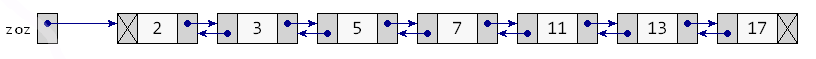
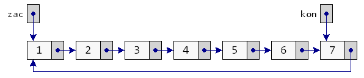

2. Spájané zoznamy¶
Predchádzajúca prednáška sa venovala spájanej dátovej štruktúre, v ktorej mal každý prvok svojho nasledovníka (okrem posledného). Takejto štruktúre sme hovorili spájaný zoznam (linked list).
Zhrňme z minulej prednášky najdôležitejšie funkcie, ktoré pracujú so spájanými zoznamami. Používali sme túto deklaráciu triedy Vrchol:
class Vrchol:
def __init__(self, data, next=None):
self.data, self.next = data, next
Pre spájané zoznamy, ktoré sú poskladané z takýchto vrcholov Vrchol sme definovali niekoľko funkcií:
def vypis(zoz): # vypíše prvky zoznamu
while zoz is not None:
print(repr(zoz.data), end=' -> ')
zoz = zoz.next
print(None)
def vyrob(postupnost): # z prvkov danej postupnosti vytvorí nový zoznam
zoz = None
for hodnota in reversed(postupnost):
zoz = Vrchol(hodnota, zoz)
return zoz
def pocet(zoz): # zistí počet prvkov zoznamu
vysl = 0
while zoz is not None:
vysl += 1
zoz = zoz.next
return vysl
def zisti(zoz, hodnota): # zistí, či je prvok v zozname
while zoz is not None:
if zoz.data == hodnota:
return True
zoz = zoz.next
return False
def pridaj_zaciatok(zoz, hodnota): # pridaj prvok na začiatok zoznamu
return Vrchol(hodnota, zoz)
def pridaj_koniec(zoz, hodnota): # pridaj prvok na koniec zoznamu
if zoz is None:
return Vrchol(hodnota)
posledny = zoz
while posledny.next is not None:
posledny = posledny.next
posledny.next = Vrchol(hodnota)
return zoz
Tieto funkcie môžeme ešte otestovať:
>>> zoz = None
>>> zoz = pridaj_zaciatok(zoz, 7)
>>> zoz = pridaj_koniec(zoz, 'abc')
>>> zoz = pridaj_zaciatok(zoz, (1, 2))
>>> vypis(zoz)
(1, 2) -> 7 -> 'abc' -> None
>>> pocet(zoz)
3
>>> zisti(zoz, 'abc')
True
V podobnom duchu boli aj ďalšie funkcie, ktoré ste programovali na cvičeniach.
Keď sa vytvára nejaká nová dátová štruktúra, veľmi často sa všetky funkcie zapuzdria do jedného celku - do jednej triedy, pričom sa skryjú realizačné detaily a aj nejaké pomocné funkcie a atribúty (hovoríme tomu enkapsulácia).
Trieda spájaný zoznam¶
Navrhneme novú triedu SpajanyZoznam (v anglickej verzii by sme ju nazvali LinkedList), pre ktorú zadefinujeme najdôležitejšie metódy. Všimnite si, že definíciu pomocnej triedy Vrchol sme vnorili do triedy SpajanyZoznam. Tým, že sme definíciu tejto triedy vnorili, oznamujeme, že patrí do triedy SpajanyZoznam a zrejme sa bude využívať v metódach tejto triedy. Všetky funkcie, ktoré pracovali so spájaným zoznamom, mali prvý parameter referenciu na prvý prvok zoznamu. Teraz tento parameter zastúpi atribút self.zac, teda začiatok zoznamu. Už vieme, že si bude treba dať pozor, aby sme túto referenciu nepokazili:
class SpajanyZoznam:
#----- vnorená trieda -----
class Vrchol:
def __init__(self, data, next=None):
self.data, self.next = data, next
#----- koniec vnorenej definície triedy -----
def __init__(self):
self.zac = None # začiatok zoznamu
def vypis(self): # vypíše prvky zoznamu
zoz = self.zac
while zoz is not None:
print(repr(zoz.data), end=' -> ')
zoz = zoz.next
print(None)
def vyrob(self, postupnost): # z prvkov danej postupnosti vytvorí nový zoznam
self.zac = None
for hodnota in reversed(postupnost):
self.zac = self.Vrchol(hodnota, self.zac)
def pocet(self): # zistí počet prvkov zoznamu
vysl = 0
zoz = self.zac
while zoz is not None:
vysl += 1
zoz = zoz.next
return vysl
def zisti(self, hodnota): # zistí, či je prvok v zozname
zoz = self.zac
while zoz is not None:
if zoz.data == hodnota:
return True
zoz = zoz.next
return False
def pridaj_zaciatok(self, hodnota): # pridaj prvok na začiatok zoznamu
self.zac = self.Vrchol(hodnota, self.zac)
def pridaj_koniec(self, hodnota): # pridaj prvok na koniec zoznamu
if self.zac is None:
self.zac = self.Vrchol(hodnota)
else:
posledny = self.zac
while posledny.next is not None:
posledny = posledny.next
posledny.next = self.Vrchol(hodnota)
Skôr, ako to budeme testovať, všimnite si, že metódy pridaj_zaciatok(), pridaj_koniec(), ale aj vyrob už nie sú také funkcie, ktoré vždy vracali novú referenciu na začiatok zoznamu - teraz túto referenciu už nepotrebujeme ako výsledok funkcie. Samotné metódy zmenia referenciu na začiatok v atribúte self.zac. Tiež vidíte použitie vnorenej triedy Vrchol: aby sme mohli vytvoriť nový vrchol, musíme zapísať self.Vrchol(hodnota). Zapíšme nejaký jednoduchý test, aby sme si zvykli na prácu s touto dátovou štruktúrou:
>>> zoz = SpajanyZoznam()
>>> zoz.pridaj_zaciatok(7)
>>> zoz.pridaj_koniec('abc')
>>> zoz.pridaj_zaciatok((1, 2))
>>> zoz.vypis()
(1, 2) -> 7 -> 'abc' -> None
>>> zoz.pocet()
3
>>> zoz.zisti('abc')
True
Funguje to podľa očakávania dobre. Len by to mohlo byť viac pythonovské (pythonic):
namiesto metódy
vyrob(), ktorá zruší momentálny obsah zoznamu a vyrobí nový (inicializuje) z nejakej postupnosti hodnôt, presunieme túto inicializáciu do__init__, teraz bude fungovaťzoz = SpajanyZoznam(post)namiesto metódy
vypis()by mohlo byť radšej__repr__()alebo__str__()a teda by mohlo fungovať, napríkladprint(zoz)namiesto
pocet()by mohlo byť radšej__len__()a teda by vďaka tomu fungovalo nielenzoz.__len__()ale ajlen(zoz)namiesto
pridaj_koniec()by mohlo byť radšejappend(), aby sa to podobalo pythonovskému pridávaniu na koniec pythonovského zoznamunamiesto
zisti()by mohlo byť radšej__contains__()a teda by fungovalohodnota in zoz
Budeme sa snažiť aj ďalšie metódy zapisovať tak, aby sa so spájaným zoznamom pracovalo podobne ako s inými dátovými typmi. Prepíšme triedu SpajanyZoznam:
class SpajanyZoznam:
class Vrchol:
def __init__(self, data, next=None):
self.data, self.next = data, next
def __init__(self, postupnost=None):
self.zac = None # začiatok zoznamu
if postupnost is not None:
for hodnota in reversed(postupnost):
self.insert0(hodnota)
def __repr__(self):
vysl, zoz = [], self.zac
while zoz is not None:
vysl.append(repr(zoz.data))
zoz = zoz.next
vysl.append('None')
return ' -> '.join(vysl)
def __len__(self):
vysl, zoz = 0, self.zac
while zoz is not None:
vysl += 1
zoz = zoz.next
return vysl
def __contains__(self, hodnota):
zoz = self.zac
while zoz is not None:
if zoz.data == hodnota:
return True
zoz = zoz.next
return False
def insert0(self, hodnota):
self.zac = self.Vrchol(hodnota, self.zac)
def append(self, hodnota):
if self.zac is None:
self.zac = self.Vrchol(hodnota)
else:
posledny = self.zac
while posledny.next is not None:
posledny = posledny.next
posledny.next = self.Vrchol(hodnota)
Pristavme sa na dvoch posledných metódach:
metóda
insert0(), ktorá pridáva nový prvok na začiatok zoznamu (podobnálist.insert(0, hodnota)), je veľmi rýchla, lebo obsahuje len jedno priradenie a bude trvať rovnaký čas bez ohľadu na to, či je doterajší zoznam krátky alebo obsahuje už veľa prvkovmetóda
append(), ktorá pridáva nový prvok na koniec zoznamu, je v niektorých prípadoch veľmi pomalá: ak už doterajší zoznam obsahuje obrovské množstvo prvkov (napríklad 100000), pridať nový prvok na koniec bude trvať už nejaký nezanedbateľný čas (napríklad, 0.01 sekundy); keď takéto pridávanie urobíme 1000 krát, už to môžu byť desiatky sekúnd.
Všimnite si, že v tejto metóde môže takto výrazne zdržovať len vnútorný while-cyklus. Ak by sme sa ho dokázali zbaviť, aj metóda append() by mohla byť dostatočne rýchla. Tento cyklus nerobí nič iné, len hľadá momentálne posledný vrchol v zozname. Ak by sme ale okrem referencie na začiatok zoznamu zabezpečili pamätanie aj referencie na posledný vrchol, všetko by sa vyriešilo.
Do triedy SpajanyZoznam k atribútu zac pridáme ďalší: kon, v ktorom si budeme ukladať referenciu na posledný vrchol zoznamu. Počiatočnú hodnotu (None) mu priradíme v inicializácii __init__(). Ďalej vo všetkých metódach, ktoré nejako modifikujú samotný spájaný zoznam, zabezpečíme, aby sa správne nastavila aj táto koncová referencia. V našom programe sa okrem inicializácie a metódy append() musí opraviť aj metóda insert0():
class SpajanyZoznam:
class Vrchol:
def __init__(self, data, next=None):
self.data, self.next = data, next
def __init__(self, postupnost=None):
self.zac = self.kon = None # začiatok a koniec zoznamu
if postupnost is not None:
for hodnota in postupnost:
self.append(hodnota)
...
def insert0(self, hodnota):
self.zac = self.Vrchol(hodnota, self.zac)
if self.kon is None:
self.kon = self.zac
def append(self, hodnota):
if self.zac is None:
self.kon = self.zac = self.Vrchol(hodnota)
else:
self.kon.next = self.Vrchol(hodnota)
self.kon = self.kon.next
V tejto novej verzii v metóde append() už nie je žiaden cyklus a obsahuje len jeden test a niekoľko priradení. Môžete otestovať rýchlosť tejto metódy napríklad takto:
>>> zoz = SpajanyZoznam(range(100000))
>>> for i in range(100000):
zoz.append(i)
>>> len(zoz)
200000
Doplňme do tejto triedy SpajanyZoznam aj metódy pop0() a pop(), ktoré vyhodia 1. prvok, resp. posledný prvok zoznamu a vrátia príslušnú hodnotu vyhadzovaného prvku (podobne, ako to robia metódy list.pop(0) a list.pop()):
class SpajanyZoznam:
...
def pop0(self):
if self.zac is None:
raise EmptyError
vysl = self.zac.data
self.zac = self.zac.next
if self.zac is None:
self.kon = None
return vysl # hodnota vyhodeného prvku
def pop(self):
if self.zac is None:
raise EmptyError
if self.zac.next is None: # jednoprvkový zoznam
vysl = self.zac.data
self.zac = self.kon = None
return vysl
self.kon = self.zac
while self.kon.next.next is not None:
self.kon = self.kon.next
vysl = self.kon.next.data
self.kon.next = None
return vysl # hodnota vyhodeného prvku
Vidíme, že vyhodenie prvého prvku zoznamu (metóda pop0()) je veľmi jednoduché a rýchle (nezávisí od momentálnej veľkosti zoznamu). Metóda na vyhodenie posledného prvku je už náročnejšia a obsahuje while-cyklus na nájdenie predposledného vrcholu zoznamu. Preto je táto metóda veľmi pomalá a už nám tu nepomôže ani „finta“ s udržiavaním si referencie na posledný vrchol.
Otestujme:
>>> zoz = SpajanyZoznam(range(10000))
>>> for i in range(10000):
x = zoz.pop()
Zhrňme základné metódy, ktoré pridávajú, resp. odoberajú prvok zo začiatku alebo konca zoznamu:
metóda
insert0()vloží prvok na začiatok zoznamu - je veľmi rýchlametóda
append()vloží prvok na koniec zoznamu - je veľmi rýchla len vtedy, ak využíva pomocnú referenciu na koniec zoznamu (inak je pomalá)metóda
pop0()vyberie prvok zo začiatku zoznamu - je veľmi rýchlametóda
pop()vyberie prvok z konca zoznamu - je veľmi pomalá a pre jednosmerný spájaný zoznam neexistuje spôsob, ako to urýchliť
Keď sa budete niekedy rozhodovať, ako budete pracovať s nejakým spájaným zoznamom, spomeňte si na toto porovnanie rýchlostí a ak sa bude dať, snažte sa vyhnúť odoberaniu prvku z konca zoznamu.
Mapovacie metódy
Zapíšme metódu, ktorá postupne prejde všetky vrcholy spájaného zoznamu a každému zmení hodnotu podľa zadanej funkcie:
class SpajanyZoznam:
...
def mapuj(self, funkcia):
zoz = self.zac
while zoz is not None:
zoz.data = funkcia(zoz.data)
zoz = zoz.next
Otestujeme:
>>> def fun(x): return x * x
>>> zoz = SpajanyZoznam(range(5))
>>> zoz
0 -> 1 -> 2 -> 3 -> 4 -> None
>>> zoz.mapuj(fun)
>>> zoz
0 -> 1 -> 4 -> 9 -> 16 -> None
Funguje to aj s lambda konštrukciou, napríklad:
>>> zoz = SpajanyZoznam('Python')
>>> zoz
'P' -> 'y' -> 't' -> 'h' -> 'o' -> 'n' -> None
>>> zoz.mapuj(lambda x: x.upper())
>>> zoz
'P' -> 'Y' -> 'T' -> 'H' -> 'O' -> 'N' -> None
Parametrom funkcie môže byť aj nejaká podmienka, napríklad takáto verzia mapuj:
class SpajanyZoznam:
...
def mapuj(self, podmienka, funkcia):
zoz = self.zac
while zoz is not None:
if podmienka(zoz.data):
zoz.data = funkcia(zoz.data)
zoz = zoz.next
Napríklad:
>>> zoz = SpajanyZoznam(range(1, 20, 2))
>>> zoz
1 -> 3 -> 5 -> 7 -> 9 -> 11 -> 13 -> 15 -> 17 -> 19 -> None
>>> zoz.mapuj(lambda x: x%3, lambda x: x*x)
>>> zoz
1 -> 3 -> 25 -> 49 -> 9 -> 121 -> 169 -> 15 -> 289 -> 361 -> None
Ďalšia metóda vytvorí obyčajný pythonovský zoznam prvkov (typu list) z prvkov spájaného zoznamu, ktoré spĺňajú nejakú podmienku:
class SpajanyZoznam:
...
def tolist(self, podmienka=None):
lst = []
zoz = self.zac
while zoz is not None:
if podmienka is None or podmienka(zoz.data):
lst.append(zoz.data)
zoz = zoz.next
return lst
Napríklad:
>>> zoz = SpajanyZoznam((1, 2, 'A', 4, 'B'))
>>> zoz.tolist(lambda x: isinstance(x, int))
[1, 2, 4]
>>> zoz.tolist()
[1, 2, 'A', 4, 'B']
>>> def podm(x): return type(x) == str
>>> zoz.tolist(podm)
['A', 'B']
Rekurzia v metóde
Na predchádzajúcich cvičeniach ste zostavovali rekurzívnu funkciu (napríklad 15. úloha), ktorá zisťovala počet prvkov spájaného zoznamu. Vaše riešenie mohlo vyzerať, napríklad takto:
def pocet(zoz):
if zoz is None:
return 0
return pocet(zoz.next) + 1
Ak by sme túto rekurziu chceli zapísať ako metódu triedy SpajanyZoznam (problémom je parameter zoz), môžeme to urobiť niekoľkými spôsobmi. Najlepšie to ale urobíme ako vnorenú rekurzívnu funkciu do príslušnej metódy:
class SpajanyZoznam:
...
def pocet(self):
#----- vnorená funkcia
def pocet_rek(zoz):
if zoz is None:
return 0
return pocet_rek(zoz.next) + 1
#----- koniec vnorenej funkcie
return pocet_rek(self.zac)
Hoci táto rekurzívna funkcia nemá žiaden praktický význam (funguje len pre zoznamy kratšie ako 1000), ideu vnorených a hlavne rekurzívnych funkcií budeme neskôr používať veľmi často.
Realizácia zásobníka a radu¶
V prednáške 15. Zásobníky a rady sme sa zoznámili s dátovou štruktúrou zásobník. Využili sme ho hlavne pri spracovávaní aritmetických výrazov, ale aj ako mechanizmus, pomocou ktorého vieme nahradiť rekurziu zásobníkom.
Zásobník sme vtedy realizovali pomocou pythonovského zoznamu (typ list):
operácia
push()pridávala nový prvok na koniec zoznamu pomocou metódylist.append()operácia
pop()odoberala zo zoznamu posledný prvok pomocou metódylist.pop()operácia
is_empty()zisťovala, či je zoznam prázdny
Zásobník sa dá veľmi elegantne realizovať aj pomocou spájaného zoznamu:
v tomto prípade bude vrch zásobníka na začiatku zoznamu
operácia
push()pridá nový prvok na začiatok spájaného zoznamuoperácia
pop()odoberie prvok zo začiatku spájaného zoznamuoperácia
is_empty()zistí, či je spájaný zoznam prázdnyoperácia
top()vráti hodnotu prvého prvku spájaného zoznamuopäť použijeme novú výnimku
EmptyError
Zapíšme kompletný kód:
class EmptyError(Exception): pass
class Stack:
class _Vrchol: # vnorená trieda
def __init__(self, data, next):
self.data, self.next = data, next
def __init__(self):
self._zac = None
def push(self, hodnota): # pridá na začiatok zoznamu
self._zac = self._Vrchol(hodnota, self._zac)
def pop(self): # odoberie zo začiatku zoznamu
if self.is_empty():
raise EmptyError
vysl = self._zac.data
self._zac = self._zac.next
return vysl
def top(self): # vráti hodnotu prvého prvku
if self.is_empty():
raise EmptyError
return self._zac.data
def is_empty(self):
return self._zac is None
Vidíte, že táto trieda Stack je veľmi zjednodušená verzia triedy SpajanyZoznam. Mohli by sme ju použiť všade tam, kde sme doteraz pracovali so zásobníkom, ktorý bol realizovaný pomocou pythonovského zoznamu list.
Zamyslite sa nad tým, ako by fungoval zásobník, ktorého vrch by bol na konci spájaného zoznamu (pridávame aj odoberáme prvky z konca spájaného zoznamu). Bol by rovnako rýchly ako táto verzia s vrchom zásobníka na začiatku spájaného zoznamu?
Realizácia radu (frontu)¶
V prednáške 15. Zásobníky a rady sme sa zoznámili aj s ďalšou dátovou štruktúrou rad. Aj rad sme realizovali pomocou obyčajného zoznamu (typ list):
operácia
enqueue()pridávala nový prvok na koniec zoznamu pomocou metódylist.append()operácia
dequeue()odoberala zo zoznamu prvý prvok pomocou metódylist.pop(0)operácia
is_empty()zisťovala, či je zoznam prázdny
Pri realizovaní radu pomocou spájaného zoznamu sa musíme zamyslieť nad tým, či:
bude začiatok radu na začiatku spájaného zoznamu
pridávať budeme na koniec zoznamu a odoberať budeme zo začiatku
bude začiatok radu na konci spájaného zoznamu
pridávať budeme na začiatok zoznamu a odoberať budeme z konca
My už vieme, že pridávanie, resp. odoberanie zo začiatku spájaného zoznamu sú rýchle operácie. Ale pridávanie na koniec je rýchle len s pomocnou referencie na koniec zoznamu a odoberanie z konca je vždy pomalé. Preto si zvolíme variant (a), pri ktorom vieme rýchlo pridávať na koniec a rýchlo odoberať zo začiatku zoznamu:
operácia
enqueue()pridá nový prvok na koniec spájaného zoznamu (použije referenciu na posledný vrchol zoznamu)operácia
dequeue()odoberie prvok zo začiatku spájaného zoznamuoperácia
is_empty()zistí, či je spájaný zoznam prázdnyoperácia
front()vráti hodnotu prvého prvku spájaného zoznamuopäť použijeme výnimku
EmptyError
Zapíšme kompletný kód:
class EmptyError(Exception): pass
class Queue:
class _Vrchol: # vnorená trieda
def __init__(self, data):
self.data, self.next = data, None
def __init__(self):
self._zac = self._kon = None
def enqueue(self, hodnota): # pridá na koniec zoznamu
novy = self._Vrchol(hodnota)
if self._zac is None:
self._zac = self._kon = novy
else:
self._kon.next = novy
self._kon = novy
def dequeue(self): # odoberie zo začiatku zoznamu
if self.is_empty():
raise EmptyError
vysl = self._zac.data
self._zac = self._zac.next
if self._zac is None:
self._kon = None
return vysl
def front(self): # vráti hodnotu prvého prvku
if self.is_empty():
raise EmptyError
return self._zac.data
def is_empty(self):
return self._zac is None
Vidíte, že aj trieda Queue je veľmi zjednodušená verzia triedy SpajanyZoznam.
Iterovanie spájaného zoznamu¶
V prednáške 16. Funkcie, Iterátory, generátory sme sa dozvedeli, že objekt môže iterovateľný, ak mu funguje operátor indexovania, teda má magickú metódu __getitem__. Teraz postupne vybudujeme dva operátory __getitem__ a __setitem__.
Operátory indexovania
Pre pythonovský obyčajný zoznam (typ list) sú veľmi typické operácie indexovania, t.j. keď vieme zistiť hodnotu nejakého prvku podľa jeho indexu (pozície v zozname), resp. keď vieme zmeniť hodnotu prvku zadaného indexom. Zapíšme tieto dve operácie ako metódy triedy SpajanyZoznam:
class SpajanyZoznam:
...
def _ity(self, index): # zistí referenciu i-teho prvku
if index < 0:
raise IndexError
zoz = self.zac
while zoz is not None and index > 0:
zoz = zoz.next
index -= 1
if zoz is None:
raise IndexError
return zoz
def daj_ity(self, index): # vráti hodnotu i-teho prvku
return self._ity(index).data
def zmen_ity(self, index, hodnota): # zmení hodnotu i-teho prvku
self._ity(index).data = hodnota
Vytvorili sme pomocnú (súkromnú) metódu _ity(), ktorá vráti referenciu na príslušný vrchol (alebo spadne na chybe IndexError). Opäť tu prvý znak mena _ označuje, že je to pomocná metóda, ktorú by sme radšej nemali používať mimo metód samotnej triedy.
Budeme to testovať takto - najprv si ukážme zápis pomocou obyčajného zoznamu list:
>>> lst = list(range(1, 20, 2))
>>> for i in range(len(lst)):
lst[i] = lst[i] ** 2
>>> lst
[1, 9, 25, 49, 81, 121, 169, 225, 289, 361]
a prepíšeme to pre spájaný zoznam:
>>> zoz = SpajanyZoznam(range(1, 20, 2))
>>> for i in range(len(zoz)):
x = zoz.daj_ity(i)
zoz.zmen_ity(i, x ** 2) # zoz.zmen_ity(i, zoz.daj_ity(i) ** 2)
>>> zoz
1 -> 9 -> 25 -> 49 -> 81 -> 121 -> 169 -> 225 -> 289 -> 361 -> None
Vidíme, že v oboch prípadoch dostávame rovnakú postupnosť čísel, len zápis lst[i] = lst[i] ** 2 je výrazne lepšie čitateľný ako zoz.zmen_ity(i, zoz.daj_ity(i) ** 2).
Hodilo by sa nám, keby sme
namiesto volania
zoz.daj_ity(i)mohli zapísaťzoz[i]a Python by to pochopil ako vyhľadanie i-teho prvku zoznamu a vrátil by príslušnú hodnotunamiesto volania
zoz.zmen_ity(i, hodnota)mohli zapísaťzoz[i] = hodnotaa Python by to pochopil ako vyhľadanie i-teho prvku zoznamu a potom aj zmenu jeho hodnoty
Naozaj toto v Pythone funguje. Rovnako ako sme prekryli, teda preťažili (overload) operácie súčtu pomocou magickej metódy __add__(), ako sme preťažili operáciu in pomocou __contains__(), atď. môžeme preťažiť aj operácie indexovania. Funguje to takto:
keď v Pythone zapíšeme napríklad
lst[i], toto sa Pythonom prepíše na magické volanielst.__getitem__(i)a až táto magická metóda vykoná výber hodnotykeď v Pythone zapíšeme napríklad
lst[i] = hodnota, toto sa prepíše na magické volanielst.__setitem__(i, hodnota)a až táto magická metóda vykoná zmenu hodnotykeď v Pythone zapíšeme napríklad
del lst[i], toto sa prepíše na magické volanielst.__delitem__(i)a až táto magická metóda vykoná zrušenie hodnoty
Môžete to otestovať na pythonovskom zozname list:
>>> lst = list(range(1, 20, 2))
>>> for i in range(len(lst)):
lst.__setitem__(i, lst.__getitem__(i) ** 2)
Tomuto v programovacích jazykoch hovoríme syntaktický cukor a slúži len na uľahčenie zápisu a čitateľnosť kódu. Už sme sa s tým stretli pri aritmetických operáciách, keď a+b často označuje a.__add__(b).
Takže prepíšme naše dve metódy daj_ity() a zmen_ity() na magické __getitem__() a __setitem__():
class SpajanyZoznam:
...
def _ity(self, index): # pomocná metóda
if index < 0:
raise IndexError
zoz = self.zac
while zoz is not None and index > 0:
zoz = zoz.next
index -= 1
if zoz is None:
raise IndexError
return zoz
def __getitem__(self, index): # vráti hodnotu i-teho prvku
return self._ity(index).data
def __setitem__(self, index, hodnota): # zmení hodnotu i-teho prvku
self._ity(index).data = hodnota
Samozrejme, že môžeme programy písať aj bez „syntaktického cukru“:
>>> zoz.__setitem__(i, zoz.__getitem__(i) ** 2)
ale určite čitateľnejšie to bude „osladené“:
>>> zoz[i] = zoz[i] ** 2
Treba si ale pri tomto zápise uvedomiť, že pre dlhé spájané zoznamy a pre veľký index toto nevinne vyzerajúce priradenie dvakrát prelieza spájaný zoznam, aby našiel (a zmenil) i-ty prvok. Už by sme si mohli pamätať, že napríklad hľadanie posledného prvku v zozname môže naozaj trvať veľmi dlho.
Spájaný zoznam a for-cyklus
Python je pre programátora veľmi ústretový a snaží sa mu čo najviac vychádzať v ústrety. Keď zadefinujeme magickú metódu __getitem__(), Python z vlastnej iniciatívy „pochopí“, že takáto štruktúra by sa mohla dať prechádzať aj for-cyklom (iterovať). Veď zrejme mu stačí postupne indexovať s indexom 0, potom 1, potom 2, atď. až kým to nespadne na chybe a vtedy ukončí aj for-cyklus (bez chybovej správy). Otestujme:
>>> zoz = SpajanyZoznam(x**2 for x in range(1, 20, 2))
>>> for prvok in zoz:
print(prvok, end=' -> ')
1 -> 9 -> 25 -> 49 -> 81 -> 121 -> 169 -> 225 -> 289 -> 361 ->
Teda to naozaj urobí presne to, čo sme očakávali. Ale pozor! Tento for-cyklus pre každý prvok zoznamu prelieza celý zoznam vždy od začiatku. Pre krátke zoznamy to asi vadiť nebude, ale pre dlhé to bude neprijateľne pomalé!
Na rovnakom princípe potom funguje aj rozbaľovací parameter, napríklad:
>>> print(*zoz)
1 9 25 49 81 121 169 225 289 361
A vy už teraz viete, že tento „syntaktický cukor“ za sebou skrýva veľmi neefektívny kód.
Iterátory
Uź vieme, že môžeme zadefinovať iterovateľnosť objektov pomocou dvojice magických metód __iter__ a __next__. Hoci ierátor vieme zostrojiť aj bez metódy __next__, keď v metóde __iter__ využijeme generátor, ktorý prechádza všetky prvky spájaného zoznamu. Toto budeme riešiť v rámci cvičení.
Dvojsmerný a cyklický spájaný zoznam¶
Zatiaľ sme sa zoznámili s tzv. jednosmerným spájaným zoznamom (Singly Linked List). Slovo „jednosmerný“ tu označuje, že v každom vrchole sa uchováva jedna referencia na nasledovný vrchol. Vďaka tejto vlastnosti, vždy keď potrebujeme zistiť predchodcu nejakého vrcholu (napríklad predchodcu posledného), musíme prejsť zoznam od začiatku až po hľadaný vrchol. O tomto už vieme, že je to drahá operácia.
V situáciách, keď budeme často potrebovať pre nejaké vrcholy zisťovať ich predchodcov, využijeme alternatívnu organizáciu spájaných zoznamov, tzv. dvojsmerné spájané zoznamy (Doubly Linked List). Každý vrchol v takomto zozname si okrem referencie na nasledovníka uchováva aj referenciu na svojho predchodcu. A zrejme prvý vrchol má svojho predchodcu None (tak ako posledný svojho nasledovníka). Dvojsmerný spájaný zoznam by sme si mohli zakresliť, napríklad takto:

Zapíšme niekoľko metód:
class DvojsmernyZoznam:
class Vrchol:
def __init__(self, data, prev=None, next=None):
self.data = data
self.prev = prev
self.next = next
def __init__(self, postupnost):
self.zac = self.kon = None
for prvok in postupnost:
self.append(prvok)
def __repr__(self):
vysl, zoz = [], self.zac
while zoz is not None:
vysl.append(repr(zoz.data))
zoz = zoz.next
vysl.append('None')
return ' <-> '.join(vysl)
def insert0(self, hodnota):
self.zac = self.Vrchol(hodnota, None, self.zac)
if self.kon is None:
self.kon = self.zac
else:
self.zac.next.prev = self.zac
def append(self, hodnota):
if self.zac is None:
self.insert0(hodnota)
else:
novy = self.Vrchol(hodnota, self.kon)
self.kon.next = novy
self.kon = novy
Cyklický spájaný zoznam¶
Spomenieme ešte jeden variant spájaných zoznamov, ktorý sa reálne využíva v niektorých špeciálnych situáciách. Cyklický spájaný zoznam (Circular Linked List) môže byť jednosmerný aj dvojsmerný - my sa tu budeme zaoberať len jednosmerným zoznamom. Označuje, že posledný vrchol v zozname nemá svojho nasledovníka označeného ako None ale nejaký iný vrchol v zozname. Najčastejšie to býva práve prvý vrchol zoznamu. Pri cyklickom zozname si musíte dať veľmi dobrý pozor na to, aby ste nevytvorili nekonečný cyklus. Cyklický spájaný zoznam by sme si mohli zakresliť, napríklad takto:

Zapíšme na ukážku niekoľko metód:
class CyklickyZoznam:
class Vrchol:
def __init__(self, data, next=None):
self.data, self.next = data, next
def __init__(self, postupnost=None):
self.zac = self.kon = None
if postupnost is not None:
for hodnota in postupnost:
self.append(hodnota)
def __repr__(self):
vysl, zoz = [], self.zac
while zoz is not None:
vysl.append(repr(zoz.data))
zoz = zoz.next
if zoz == self.zac:
break
vysl.append('...')
return ' -> '.join(vysl)
def __len__(self):
vysl, zoz = 0, self.zac
while zoz is not None:
vysl += 1
zoz = zoz.next
if zoz == self.zac:
break
return vysl
def insert0(self, hodnota):
if self.zac is None:
self.zac = self.kon = self.Vrchol(hodnota)
self.zac.next = self.zac
else:
self.kon.next = self.Vrchol(hodnota, self.zac)
self.zac = self.kon.next
def append(self, hodnota):
if self.zac is None:
self.insert0(hodnota)
else:
self.kon.next = self.Vrchol(hodnota, self.zac)
self.kon = self.kon.next
Turingov stroj¶
Alan Turing
Alan Turing (tiež) (1912-1954) sa považuje za zakladateľa modernej informatiky - rok 2012 sa na celom svete oslavoval ako Turingov rok.
Turingov stroj je veľmi zjednodušený model počítača, vďaka ktorému sa informatika dokáže zaoberať zložitosťou problémov - Turing ho publikoval v roku 1936 (keď mal 24 rokov).
Základná idea takéhoto stroja je nasledovná:
pracuje s nekonečnou páskou - postupnosť políčok, na každom môže byť nejaký symbol (my si to zjednodušíme obyčajnými znakmi, t.j. jednoznakovými reťazcami) - táto páska je nekonečná oboma smermi
nad páskou sa pohybuje čítacia/zapisovacia hlava, ktorá vie prečítať symbol na páske a prepísať ho iným symbolom
samotný stroj (riadiaca jednotka) sa v každom momente nachádza v jednom zo svojich stavov: na základe momentálneho stavu a prečítaného symbolu na páske sa riadiaca jednotka rozhoduje, čo bude robiť
na začiatku sa na políčkach pásky nachádzajú znaky nejakého vstupného reťazca (postupnosť symbolov), stroj sa nachádza v počiatočnom stave (stavy pomenujeme ľubovoľnými reťazcami znakov, napríklad
's1'alebo'end'), celý zvyšok nekonečnej pásky obsahuje prázdne symboly (my sa dohodneme, že to budeme označovať symbolom'_')činnosť stroja (program) sa definuje špeciálnou dvojrozmernou tabuľkou, tzv. pravidlami
každé pravidlo je takáto pätica: (
stav1,znak1,znak2,smer,stav2) a popisuje:keď je stroj v stave
stav1a na páske (pod čítacou hlavou) je práve symbolznak1, tak ho stroj prepíše týmto novým symbolomznak2, posunie sa na páske podľa zadaného smerusmero (-1, 0, 1) políčko a zmení svoj stav nastav2napríklad pravidlo
(s0, a, b, >, s1)označuje: v stave's0'so symbolom'a'na páske ho zmení na'b', posunie sa o jedno políčko vpravo a zmení svoj stav na's1'pre lepšiu čitateľnosť budeme smery na posúvanie hlavy označovať pomocou znakov
'<'(vľavo),'>'(vpravo),'='(bez posunu)takéto pätice sa niekedy označujú aj v tomto tvare: (
stav1,znak1) -> (znak2,smer,stav2), t.j. pre danú dvojicu stav a znak, sa zmení znak
program má väčšinou viac stavov, z ktorých niektoré sú špeciálne, tzv. koncové a majú takýto význam:
keď riadiaca jednotka prejde do koncového stavu, výpočet stroja sa zastaví a stroj oznámi, že akceptoval vstupné slovo, vtedy sa môžeme pozrieť na obsah pásky a táto informácia môže byť výsledkom výpočtu
stroj sa zastaví aj v prípade, že neexistuje pravidlo, pomocou ktorého by sa dalo pokračovať (stroj skončil v nekoncovom stave), vtedy
hovoríme, že stroj oznámil, že zamietol (neakceptoval) vstupné slovo
zrejme sa takýto stroj môže niekedy aj zacykliť a neskončí nikdy (pre informatikov je aj toto veľmi dôležitá informácia)
Na internete sa dá nájsť veľa rôznych zábavných stránok, ktoré sa venujú Turingovmu stroju, napríklad
Zostavme náš prvý program pre Turingov stroj:
(0, a) -> (A, >, 0)
(0, _) -> (_, =, end)
Vidíme, že pre počiatočný stav (zrejme je to stav s menom 0) sú tu dve pravidlá: buď je na páske symbol 'a' alebo symbol '_', ktorý označuje prázdne políčko. Ak teda čítacia hlava má pod sebou na páske symbol 'a', tak ho prepíše na symbol 'A' a posunie hlavu na políčko vpravo. Riadiaca jednotka pritom stále ostáva v stave 0. Vďaka tomuto pravidlu sa postupne všetky písmená 'a' nahradia 'A'. Ak sa pritom narazí na iný symbol, prvé pravidlo sa už nebude dať použiť a stroj sa pozrie, či nemá pre tento prípad iné pravidlo. Ak je na páske už len prázdny symbol, stroj sa zastaví a oznámi radostnú správu, že vstupné slovo akceptoval a vyrobil z neho nový reťazec. Ak ale bude na páske za postupnosťou 'a' aj nejaké iné písmeno, stroj nenájde pravidlo, ktoré by mohol použiť a preto sa zastaví. Oznámi pritom správu, že takéto vstupné slovo zamietol.
Priebeh výpočtu pre vstupné slovo 'aaa' by sme si mohli znázorniť, napríklad takto:
aaa
^ 0
Aaa
^ 0
AAa
^ 0
AAA_
^ 0
AAA_
^ end
True
True na konci výpisu znamená, že stroj sa úspešne zastavil v koncovom stave, teda stroj akceptoval vstupné slovo.
Všimnite si, že v našej vizualizácii sa na páske automaticky objavujú prázdne symboly, keďže páska je nekonečná a okrem vstupného slova obsahuje práve tieto znaky.
Ak by sme zadali, napríklad slovo ‚aba‘, tak by výpočet prebiehal takto:
aba
^ 0
Aba
^ 0
False
False tu znamená, že stroj sa zastavil v inom ako koncovom stave, teda zamietol vstup.
Môžeme povedať, že náš prvý program pre Turingov stroj akceptuje len také vstupné slová, ktoré sú zložené len zo znakov 'a'. Okrem toho sa na páske znaky 'a' zmenia na 'A'.
Návrh simulátora
Aby sme mohli s takýmto strojom lepšie experimentovať a mať možnosť si uvedomiť, ako sa pomocou neho riešenia úlohy, naprogramujeme si veľmi jednoduchý simulátor. Začneme tým, že navrhneme triedu Paska, ktorá bude popisovať pásku Turingovho stroja a jej metódy:
class Paska:
def __init__(self, obsah=''):
self.paska = list(obsah or '_')
self.poz = 0
def symbol(self):
return self.paska[self.poz]
def zmen_symbol(self, znak):
self.paska[self.poz] = znak
def __str__(self):
return ''.join(self.paska) + '\n' + ' '*self.poz + '^'
def vpravo(self):
self.poz += 1
if self.poz == len(self.paska):
self.paska.append('_')
def vlavo(self):
if self.poz > 0:
self.poz -= 1
else:
self.paska.insert(0, '_')
def text(self):
return ''.join(self.paska).strip('_')
Atribúty sú asi zrejmé:
paska- zoznam (typulist), ktorého prvky sú jednoznakové reťazce - tieto reprezentujú políčka páskypásku Turingovho stroja by sme mohli namiesto zoznamu reprezentovať aj pomocou znakového reťazca, zvolili sme zoznam, nakoľko v ňom sa jednoduchšie mení hodnota jedného prvku
všimnite si zápis
self.paska = list(obsah or '_')a konkrétne použitie operácieor, v tomto prípade má takýto význam: ak je premennáobsahprázdna (Python ju interpretuje akoFalse), výsledkom operácie je druhý operand, teda'_', inak je výsledkom samotný reťazecobsah
poz- pozícia čítacej/zapisovacej hlavy, pomocou tejto pozície budeme indexovať zoznampaskametódami
vpravo()avlavo()sa páska automaticky nafukuje, ak by hlava prišla mimo momentálne prvky zoznamu
Túto triedu využije trieda Turing, v ktorej sa okrem pásky bude uchovávať aj samotný program, teda množina prepisovacích pravidiel:
class Paska:
def __init__(self, obsah=''):
self.paska = list(obsah or '_')
self.poz = 0
def symbol(self):
return self.paska[self.poz]
def zmen_symbol(self, znak):
self.paska[self.poz] = znak
def __str__(self):
return ''.join(self.paska) + '\n' + ' '*self.poz + '^'
def vpravo(self):
self.poz += 1
if self.poz == len(self.paska):
self.paska.append('_')
def vlavo(self):
if self.poz > 0:
self.poz -= 1
else:
self.paska.insert(0, '_')
def text(self):
return ''.join(self.paska).strip('_')
symbol = property(symbol, zmen_symbol)
text = property(text)
class Turing:
def __init__(self, program, obsah='', start=None, koniec={'end', 'stop'}):
self.program = {}
self.stav = start
for riadok in program.split('\n'):
riadok = riadok.split()
if len(riadok) == 5:
stav1, znak1, znak2, smer, stav2 = riadok
self.program[stav1, znak1] = znak2, smer, stav2
if self.stav is None:
self.stav = stav1
self.paska = Paska(obsah)
self.koniec = koniec
def __str__(self):
return str(self.paska) + ' ' + self.stav
def krok(self):
stav1, znak1 = self.stav, self.paska.symbol
try:
znak2, smer, stav2 = self.program[stav1, znak1]
except KeyError:
return False
self.paska.symbol = znak2
self.stav = stav2
if smer == '>':
self.paska.vpravo()
elif smer == '<':
self.paska.vlavo()
return True
def rob(self, vypis=True):
if vypis:
print(self)
while self.stav not in self.koniec:
if not self.krok():
return False
if vypis:
print(self)
return True
Atribúty tejto triedy:
progje tabuľka pravidiel - tieto pravidlá tu môžu byť uvedené v ľubovoľnom poradí a riadiaca jednotka si vyhľadá to správnekaždé pravidlo sa skladá z piatich prvkov: v akom sme stave, aký je symbol na páske, na aký symbol sa prepíše, ako sa posunie hlava (buď
'<'alebo'>') a do akého stavu sa prejdepravidlá budeme ukladať do slovníka - asociatívneho poľa (typ
dict) tak, že kľúčom bude dvojica (stav, znak) a hodnotou pre tento kľúč bude trojica (nový_znak, smer_posunu, nový_stav)
paskabude „nekonečná“ postupnosť symbolov, využili sme tu našu trieduPaskastavoznačuje, momentálne meno stavu (môže byť, napríklad's1'alebo'0'), v ktorom sa nachádza Turingov strojkoniecoznačuje, množinu koncových stavov
Metódy
metóda
__init__()inicializuje atribúty, má tieto parametre:programzoznam pravidiel: zadáva sa ako jeden dlhý reťazec, v ktorom sú pravidlá oddelené znakom'\n', každé pravidlo sa skladá z 5 prvkov, pravidlo, ktoré neobsahuje práve 5 prvkov, sa ignoruje (môžeme použiť, napríklad ako komentár)obsahpočiatočný obsah pásky, hlava sa nastaví na prvý znak tohto reťazcastartpočiatočný stav, v ktorom štartuje Turingov stroj, ak ho nezadáme, ako počiatočný sa vyberie stav z prvého pravidlakoniecje množina koncových stavov, predpokladáme, že najčastejšie to bude{'end', 'stop'}
metóda
krok()- Turingov stroj vykoná jeden krok programu; vrátiFalse, keď sa krok nepodarí vykonať (teda pre danýstavaznakna páske neexistuje pravidlo v slovníkuprog), inak vrátiTruemetóda
rob()- riadiaca jednotka bude postupne vykonávať kroky programu, kým sa stroj nezastavímetóda vráti
True, ak program akceptoval symboly na páske, inak vrátiFalse
Do metódy rob() sme pridali kontrolný výpis, ktorý môžeme vypnúť parametrom vypis.
Turingov stroj otestujeme jediným pravidlom:
t = Turing('0 a A > 0', 'aaa')
print(t.rob())
Dostávame tento výpis:
aaa
^ 0
Aaa
^ 0
AAa
^ 0
AAA_
^ 0
False
Zrejme to nemohlo dopadnúť inak ako False, lebo náš program neobsahuje pravidlo, ktorého výsledkom by bol koncový stav.
Doplňme druhé pravidlo:
t = Turing('0 a A > 0\n0 _ _ = end', 'aaa')
print(t.rob())
aaa
^ 0
Aaa
^ 0
AAa
^ 0
AAA_
^ 0
AAA_
^ end
True
Ďalší turingov program bude akceptovať vstup len vtedy, keď obsahuje jediné slovo 'ahoj':
print(Turing('''
1 a a > 2
2 h h > 3
3 o o > 4
4 j j > 5
5 _ _ = stop
''', 'ahoj').rob())
Všimnite si, že stavy tohto programu sú 1, 2, 3, 4, 5 a stop, pričom 1 je počiatočný stav a stop je koncový stav.
Program zadaný vstup 'ahoj' akceptuje, ale napríklad 'hello' nie. Doplňme program tak, aby akceptoval obe slová 'ahoj' aj 'hello' (na páske bude buď 'ahoj' alebo 'hello'):
prog = '''
1 a a > 2
1 h h > 6
2 h h > 3
3 o o > 4
4 j j > 5
5 _ _ = stop
6 e e > 7
7 l l > 8
8 l l > 9
9 o o > 5
'''
t = Turing(prog, 'hello')
print(t.rob())
Podobný tomuto je program, ktorý akceptuje vstup len vtedy, keď sa skladá z ľubovoľného počtu dvojíc znakov 'ok':
prog = '''
1 o o > 2
1 _ _ = end
2 k k > 1
'''
t = Turing(prog, 'ok' * 100)
print(t.rob())
Zostavme ešte takýto program:
predpokladáme, že na páske je postupnosť
0a1, ktorá reprezentuje nejaké dvojkové číslo, napríklad'1011'označuje desiatkové číslo11čítacia hlava je na začiatku nastavená na prvej číslici
program pripočíta k tomuto dvojkovému číslu
1, t.j. v prípade'1011'bude výsledok na páske'1100'teda číslo12program bude postupovať takto:
najprv nájde koniec vstupného reťazca, teda prázdny znak
'_'za poslednou cifrou (toto sa zabezpečuje v stave's1')potom prechádza od konca a všetky
'1'nahrádza'0'keď pritom príde na
'0', túto nahradí'1'a skončíak sa v čísle nachádzajú iba
'1'a žiadna'0', tak namiesto prázdneho znaku'_'pred číslom dá'1'a skončí
Program pre turingov stroj:
(s1, 0) -> (0, >, s1)
(s1, 1) -> (1, >, s1)
(s1, _) -> (_, <, s2)
(s2, 1) -> (0, <, s2)
(s2, 0) -> (1, =, end)
(s2, _) -> (1, =, end)
Otestujeme naším programom:
prog = '''
s1 0 0 > s1
s1 1 1 > s1
s1 _ _ < s2
s2 1 0 < s2
s2 0 1 = end
s2 _ 1 = end
'''
t = Turing(prog, '1011')
print(t.rob())
po spustení:
1011
^ s1
1011
^ s1
1011
^ s1
1011
^ s1
1011_
^ s1
1011_
^ s2
1010_
^ s2
1000_
^ s2
1100_
^ end
True
Záverečná ukážka demonštruje zložitejší Turingov stroj: zistí, či je vstup zložený len z písmen 'a' a 'b' a či je to palindrom:
palindrom = '''
s1 a _ > sa
s1 b _ > sb
s1 _ _ = end
sa a a > sa
sa b b > sa
sa _ _ < saa
saa a _ < s2
saa _ _ < end
sb a a > sb
sb b b > sb
sb _ _ < sbb
sbb b _ < s2
sbb _ _ < end
s2 a a < s2
s2 b b < s2
s2 _ _ > s1
'''
t = Turing(palindrom, 'aba')
print(t.rob())
aba
^ s1
_ba
^ sa
_ba
^ sa
_ba_
^ sa
_ba_
^ saa
_b__
^ s2
_b__
^ s2
_b__
^ s1
____
^ sb
____
^ sbb
____
^ end
True
Cvičenie¶
Poznámka
riešenia úloh ulož do jedného súboru a odovzdaj na úlohový server https://vektor.fmph.uniba.sk/
testovací server tieto ulohy nebude testovať, vyrieš a odovzdaj ich aspoň 10 okrem tých, ktoré sú označené znakom -
prvé tri riadky súboru s riešením musia obsahovať:
# 2. cvicenie # student: Janko Hrasko # datum: 24.2.2026
zrejme ako študenta uvedieš svoje meno.
- Len pomocou metód triedy
SpajanyZoznamvymeň prvý a posledný prvok zoznamu (použi niektoré z metódappend,insert0,pop,pop0). Napríklad:>>> zoz = SpajanyZoznam('PYTHON') >>> zoz 'P' -> 'Y' -> 'T' -> 'H' -> 'O' -> 'N' -> None >>> ... >>> ... >>> ... >>> zoz 'N' -> 'Y' -> 'T' -> 'H' -> 'O' -> 'P' -> None
Tvoje riešenie by malo fungovať pre ľubovoľný spájaný zoznam, ktorý má aspoň 2 prvky. Samozrejme, že nebudeš pracovať priamo s atribútom
zac.Riešenie
>>> zoz = SpajanyZoznam('PYTHON') >>> zoz 'P' -> 'Y' -> 'T' -> 'H' -> 'O' -> 'N' -> None >>> prvy, posledny = zoz.pop0(), zoz.pop() >>> zoz.insert0(posledny) >>> zoz.append(prvy) >>> zoz 'N' -> 'Y' -> 'T' -> 'H' -> 'O' -> 'P' -> None
Poskladaj triedu
SpajanyZoznamz prednášky s atribútmizacakona s týmito metódami:__repr__(),__len__(),__contains__(hodnota),insert0(hodnota),append(hodnota)(rýchla verzia),pop0()apop()
Metóda
__len__zisťuje veľkosť spájaného zoznamu pomocou while-cyklu (prechádza všetky prvky a počíta ich počet). Prepíš túto metódu tak, aby neobsahovala cyklus: v triede zadefinuješ ešte jeden atribút (počítadlo) a potom každá metóda, ktorá zvyšuje počet prvkov zoznamu (napríkladappend()) zvýši toto počítadlo o 1 a každá metóda, ktorá nejaké prvky zo zoznamu vyhadzuje (napríkladpop()), zníži toto počítadlo. Otestuj, napríklad:z = SpajanyZoznam(range(1000)) for i in range(495): z.pop(); z.pop0() for i in range(5): z.append(i); z.insert0(i) print(len(z))
Vedel by si ručne bez počítača zistiť, aké prvky obsahuje tento výsledný 20-prvkový zoznam?
Ak by si nemal túto rýchlu verziu
__len__, nasledovný test by bežal dosť dlho, otestuj:z = SpajanyZoznam() pocet = 0 for i in range(30000): z.insert0(i) pocet += len(z) print(pocet)
450015000Riešenie
Trieda
SpajanyZoznamz prednášky s počítadlom vrcholov:class SpajanyZoznam: class Vrchol: def __init__(self, data, next=None): self.data, self.next = data, next def __init__(self, postupnost=None): self.zac = self.kon = None self.pocet = 0 # počítadlo vrcholov for hodnota in postupnost or []: self.append(hodnota) def __repr__(self): vysl, pom = [], self.zac while pom is not None: vysl.append(repr(pom.data)) pom = pom.next return ' -> '.join(vysl + ['None']) def __len__(self): return self.pocet # funkcia vráti počítadlo # vysl, pom = 0, self.zac # while pom is not None: # vysl += 1 # pom = pom.next # return vysl def __contains__(self, hodnota): pom = self.zac while pom is not None: if pom.data == hodnota: return True pom = pom.next return False def insert0(self, hodnota): self.zac = self.Vrchol(hodnota, self.zac) self.pocet += 1 # zvyšujeme počítadlo if self.kon is None: self.kon = self.zac def append(self, hodnota): if self.zac is None: self.kon = self.zac = self.Vrchol(hodnota) else: self.kon.next = self.Vrchol(hodnota) self.kon = self.kon.next self.pocet += 1 # zvyšujeme počítadlo def pop0(self): if self.zac is None: raise EmptyError vysl = self.zac.data self.zac = self.zac.next self.pocet -= 1 # znižujeme počítadlo if self.zac is None: self.kon = None return vysl def pop(self): if self.zac is None: raise EmptyError self.pocet -= 1 # znižujeme počítadlo if self.zac.next is None: vysl = self.zac.data self.zac = self.kon = None return vysl self.kon = self.zac while self.kon.next.next is not None: self.kon = self.kon.next vysl = self.kon.next.data self.kon.next = None return vysl
- Do triedy
SpajanyZoznampridaj metóduby_pattern(vzor=(0,)), ktorá nahradí hodnoty v spájanom zozname prvkami postupnostivzor. Tieto prvky berie z neprázdnej postupnosti postupne a keď sa minú, začne z nich brať od začiatku. Postupnosťou by mohol byť zoznam, n-tica, reťazec aleborange. Malo by fungovať, napríklad aj toto:>>> zoz = SpajanyZoznam('pocitac') >>> zoz.by_pattern() >>> zoz 0 -> 0 -> 0 -> 0 -> 0 -> 0 -> 0 -> None >>> zoz.by_pattern('ab') >>> zoz 'a' -> 'b' -> 'a' -> 'b' -> 'a' -> 'b' -> 'a' -> None >>> zoz.by_pattern((1, 'a', 3.14)) >>> zoz 1 -> 'a' -> 3.14 -> 1 -> 'a' -> 3.14 -> 1 -> None >>> zoz.by_pattern(range(2, 6)) >>> zoz 2 -> 3 -> 4 -> 5 -> 2 -> 3 -> 4 -> None
Riešenie
class SpajanyZoznam: ... def by_pattern(self, vzor=(0,)): pom = self.zac i = 0 while pom is not None: pom.data = vzor[i] i = (i + 1) % len(vzor) pom = pom.next
alebo:
class SpajanyZoznam: ... def by_pattern(self, vzor=(0,)): pom = self.zac vzor = list(vzor) while pom is not None: pom.data = vzor.pop(0) vzor.append(pom.data) pom = pom.next
- Do triedy
SpajanyZoznamzapíš metóducount(podret). Táto metóda bude postupne prechádzať prvky spájaného zoznamu a v tých z nich, ktoré sú znakové reťazce, zistí počet výskytov reťazcapodret. Výsledkom metódy bude celkový počet týchto výskytov. Napríklad:zoz = SpajanyZoznam('anicka dusicka kde si bola'.split()) for r in 'a', 'ic', 'kde si': print(repr(r), zoz.count(r)) print(SpajanyZoznam(('123', 232, '321', 433)).count('3'))
'a' 4 'ic' 2 'kde si' 0 2
Riešenie
class SpajanyZoznam: ... def count(self, podret): pom = self.zac vysl = 0 while pom is not None: if isinstance(pom.data, str): vysl += pom.data.count(podret) pom = pom.next return vysl
Do triedy
SpajanyZoznamdopíš metódy, ktoré všetky vrátia (pomocoureturn) novýSpajanyZoznama pôvodný zoznam nechajú bez zmeny.metóda
copy()vráti presnú kópiu pôvodného zoznamumetóda
reversed()vráti prevrátenú kópiu pôvodného zoznamumetóda
filter(podmienka)vráti kópiu pôvodného zoznamu, ale len tých prvkov, ktoré spĺňanú danú podmienku (parameterpodmienkaje logická funkcia)metóda
map(funkcia)vráti kópiu pôvodného zoznamu, ale na každý prvok aplikuje danú funkciu (parameterfunkciaje funkcia, s jedným parametrom, napríkladstr) - metóda sa podobá na funkciumapujz prednášky, ale teraz nemodifikuje samotný zoznam, ale vyrába kópiumetóda
enumerate()vráti kópiu pôvodného zoznamu, ale z každého prvku vyrobí dvojicu (tuple), v ktorej prvým prvkom bude poradové číslo (od0) a druhým prvkom bude samotná hodnota vo vrchole, malo by to fungovať podobne ako štandardná funkciaenumerate()
Napríklad:
>>> z = SpajanyZoznam('Python') >>> z 'P' -> 'y' -> 't' -> 'h' -> 'o' -> 'n' -> None >>> z1 = z.copy() >>> z1 'P' -> 'y' -> 't' -> 'h' -> 'o' -> 'n' -> None >>> z2 = z.reversed() >>> z2 'n' -> 'o' -> 'h' -> 't' -> 'y' -> 'P' -> None >>> z3 = z.filter(lambda x: x in 'aeiouy') >>> z3 'y' -> 'o' -> None >>> z4 = z.map(lambda x: x.upper()+'!') >>> z4 'P!' -> 'Y!' -> 'T!' -> 'H!' -> 'O!' -> 'N!' -> None >>> z5 = z.enumerate() >>> z5 (0, 'P') -> (1, 'y') -> (2, 't') -> (3, 'h') -> (4, 'o') -> (5, 'n') -> None >>> z 'P' -> 'y' -> 't' -> 'h' -> 'o' -> 'n' -> None
Riešenie
class SpajanyZoznam: ... def copy(self): novy = SpajanyZoznam() pom = self.zac while pom is not None: novy.append(pom.data) pom = pom.next return novy def reversed(self): novy = SpajanyZoznam() pom = self.zac while pom is not None: novy.insert0(pom.data) pom = pom.next return novy def filter(self, podmienka): novy = SpajanyZoznam() pom = self.zac while pom is not None: if podmienka(pom.data): novy.append(pom.data) pom = pom.next return novy def map(self, funkcia): novy = SpajanyZoznam() pom = self.zac while pom is not None: novy.append(funkcia(pom.data)) pom = pom.next return novy def enumerate(self): novy = SpajanyZoznam() pom = self.zac i = 0 while pom is not None: novy.append((i, pom.data)) pom = pom.next i += 1 return novy
Do triedy
SpajanyZoznamzapíš metóduopakuje_sa(), ktorá v danom zozname nájde taký prvok, ktorý sa tam opakuje aspoň raz. Rieš to dvomi vnorenými while-cyklami: postupne pre každý prvok zoznamu prejdeš celý zvyšok až do konca a hľadáš prvok s rovnakou hodnotou. Ak taký prvok neexistuje, metóda vrátiNone. Ak je takých prvkov viac, vráti ľubovoľný z nich. Napríklad:>>> a = SpajanyZoznam((*range(100), *range(90, 200))) >>> print(a.opakuje_sa()) 90 >>> b = SpajanyZoznam('mama ma emu a ema Ma mamu'.split()) >>> print(b.opakuje_sa()) None
Riešenie
class SpajanyZoznam: ... def opakuje_sa(self): pom1 = self.zac if pom1 is not None: while pom1 is not None: pom2 = pom1.next while pom2 is not None: if pom1.data == pom2.data: return pom1.data pom2 = pom2.next pom1 = pom1.next return None
Metóda
__delitem__(index)by mala umožniť vyhodiť zo zoznamu prvok s príslušným indexom. Dopíš ju do triedySpajanyZoznam(môžeš použiť pomocnú metódu_ity). Teraz by malo fungovať, napríklad:>>> z = SpajanyZoznam(range(3, 22, 4)) >>> z 3 -> 7 -> 11 -> 15 -> 19 -> None >>> del z[2] >>> z 3 -> 7 -> 15 -> 19 -> None
Riešenie
class SpajanyZoznam: ... def __delitem__(self, index): if index == 0: self.pop0() return pom = self._ity(index-1) if pom.next is None: raise IndexError pom.next = pom.next.next if pom.next is None: self.kon = pom
- Do triedy
SpajanyZoznamdopíš magickú metódu__eq__(druhy), pomocou ktorej sa dajú porovnať dva zoznamy. Parametrom tejto metódy je druhý porovnávaný zoznam (objekt typuSpajanyZoznam). Python potom zo zápisuz1==z2vyrobí volaniez1.__eq__(z2). Malo by teraz fungovať napríklad:>>> z1 = SpajanyZoznam(range(2, 7)) >>> z2 = SpajanyZoznam((3, 4, 5, 6, 7)) >>> z2.pop() 7 >>> z2.insert0(2) >>> z1 == z2 True >>> z1.pop() 6 >>> z1 == z2 False
Riešenie
class SpajanyZoznam: ... def __eq__(self, druhy): pom1 = self.zac pom2 = druhy.zac while pom1 is not None and pom2 is not None: if pom1.data != pom2.data: return False pom1 = pom1.next pom2 = pom2.next return pom1 is None and pom2 is None
- Napíš metódu
extend(param), ktorá bude fungovať podobne ako metódaextendpre pythonovský zoznam (typulist): parametrom je ľubovoľná iterovateľná postupnosť alebo iný spájaný zoznam. Metóda pridá prvky postupnosti, resp. iného spájaného zoznamu na koniec pôvodného zoznamu. Metóda nič nevracia. Napríklad:>>> z = SpajanyZoznam(range(3, 8)) >>> z.extend('hello') >>> z.extend(SpajanyZoznam([1, 'a', 3.14])) >>> z 3 -> 4 -> 5 -> 6 -> 7 -> 'h' -> 'e' -> 'l' -> 'l' -> 'o' -> 1 -> 'a' -> 3.14 -> None >>> z1 = SpajanyZoznam('x') >>> z2 = SpajanyZoznam(range(30000)) >>> z1.extend(z2) >>> len(z1) 30001
Zamysli sa nad tým, ako spraviť, aby
z1.extend(z2)nebolo príliš pomalé.Riešenie
class SpajanyZoznam: ... def extend(self, param): if isinstance(param, SpajanyZoznam): pom = param.zac while pom is not None: self.append(pom.data) pom = pom.next else: for prvok in param: self.append(prvok)
Do triedy
SpajanyZoznamdopíš magickú metódu__add__(druhy), vďaka ktorej sa budú dať veľmi elegantne zreťazovať spájané zoznamy podobne ako sa zreťazujú znakové reťazce aj pythonovské zoznamy. Parametromdruhytejto metódy je druhý spájaný zoznam (objekt typuSpajanyZoznam). Python potom zo zápisuz1+z2vyrobí volaniez1.__add__(z2). Metóda teda vráti nový spájaný zoznam, ktorý vznikne spojením pôvodných dvoch zoznamov (tieto nepokazí). Otestuj:>>> z1 = SpajanyZoznam('abc') >>> z2 = SpajanyZoznam(range(2, 10, 2)) >>> z3 = z1 + z2 >>> z3 'a' -> 'b' -> 'c' -> 2 -> 4 -> 6 -> 8 -> None >>> z1 'a' -> 'b' -> 'c' -> None >>> z2 2 -> 4 -> 6 -> 8 -> None >>> z2 + z1 2 -> 4 -> 6 -> 8 -> 'a' -> 'b' -> 'c' -> None
Riešenie
class SpajanyZoznam: ... def __add__(self, druhy): novy = SpajanyZoznam() pom = self.zac while pom is not None: novy.append(pom.data) pom = pom.next pom = druhy.zac while pom is not None: novy.append(pom.data) pom = pom.next return novy
alebo:
class SpajanyZoznam: ... def __add__(self, druhy): novy = self.copy() novy.extend(druhy) return novy
Do triedy
SpajanyZoznamdopíš magické metódy__iter__a__next__tak, aby fungoval iterátor nie pomocou__getitem__, ale pomocouiteranext. Ak to naprogramuješ správne, malo by to výrazne urýchliť iterovanie zoznamu. Napríklad:>>> >>> z = SpajanyZoznam(range(1000000)) >>> sum(z) 499999500000
Iterátor sa dá naprogramovať aj pomocou generátora (využiješ
yield): takýto generátor bude v metóde__iter__a metódu__next__nebude potrebovať. Otestuj rovnako ako v predchádxzajúcej úlohe:>>> >>> z = SpajanyZoznam(range(1000000)) >>> sum(z) 499999500000
- Implementuj metódy tried
StackaQueuepomocou cyklického spájaného zoznamu: udržiavaj jedinú referenciu a to na posledný vrchol (jeho nasledovníkom je začiatok zoznamu). Potom otestuj rýchlosť práce s takýmito zásobníkmi a radmi v porovnaní s realizáciou pomocou obyčajného pythonovského zoznamu (typlist):najprv vytvor
nprvkovú štruktúru (zásobník alebo rad)potom z neho postupne vyberaj všetky prvky - testuj aj pre veľké
n, napríklad100000
Riešenie pre Stack
class Stack: class Vrchol: def __init__(self, data, next=None): self.data, self.next = data, next def __init__(self): self.kon = None def push(self, hodnota): novy = self.Vrchol(hodnota) if self.kon is None: novy.next = self.kon = novy else: novy.next = self.kon.next self.kon.next = novy def pop(self): if self.kon is None: raise EmptyError hodn = self.kon.next.data if self.kon == self.kon.next: self.kon = None else: self.kon.next = self.kon.next.next return hodn def top(self): if self.kon is None: raise EmptyError return self.kon.next.data def is_empty(self): return self.kon is None
Riešenie pre Queue
class Queue: class Vrchol: def __init__(self, data, next=None): self.data, self.next = data, next def __init__(self): self.kon = None def enqueue(self, hodnota): novy = self.Vrchol(hodnota) if self.kon is None: novy.next = novy else: novy.next = self.kon.next self.kon.next = novy self.kon = novy def dequeue(self): if self.kon is None: raise EmptyError hodn = self.kon.next.data if self.kon == self.kon.next: self.kon = None else: self.kon.next = self.kon.next.next return hodn def front(self): if self.kon is None: raise EmptyError return self.kon.next.data def is_empty(self): return self.kon is None
Turingov stroj
- Pomocou triedy
Turingz prednášky otestuj tieto pravidlá:(start, q) -> (q, >, jedna) (jedna, q) -> (q, >, dva) (dva, q) -> (q, >, start) (jedna, _) -> (_, =, stop)
Zapíš ich do programu:
prog = ''' ''' t = Turing(prog, ...) print(t.rob())
Zisti, aké reťazce bude akceptovať tento Turingov stroj. Nájdi aspoň 3 rôzne dlhé reťazce aspoň dĺžky 8, ktoré budú akceptované (teda metóda
rob()vrátiTrue).Riešenie
aby bol vstup akceptovaný, musí mať tvar
(3*i+1)*'q'(pre ľubovoľnéi), napríklad:prog = ''' start q q > jedna jedna q q > dva dva q q > start jedna _ _ = stop''' i = 3 t = Turing(prog, (3*i+1)*'q') print(t.rob())
- Na vstupnej páske je postupnosť znakov
'x'. Napíš program, ktorý akceptuje tento vstup len, ak obsahuje nepárny počet týchto znakov. Napríklad:>>> prog = ''' ...program... ''' >>> print(Turing(prog, 'xxxxx').rob(False)) True >>> print(Turing(prog, 'xx' * 5).rob(False)) False
Riešenie
prog = ''' s1 x x > s2 s2 x x > s1 s2 _ _ = stop''' for retazec in 'xxxxx', 'xx'*5, 'xxyx', 'x': print(retazec, Turing(prog, retazec).rob(False))
- Program z úlohy (15) oprav tak, aby akceptoval len reťazce zložené z písmen
{x, y}, v ktorých je nepárny počet znakov'x'(na počte'y'by nemalo záležať).>>> prog = ''' ...program... ''' >>> print(Turing(prog, 'xxxxx').rob(False)) True >>> print(Turing(prog, 'yyy').rob(False)) False >>> print(Turing(prog, 'yx' * 5).rob(False)) True
Riešenie
prog = ''' s1 x x > s2 s1 y y > s1 s2 x x > s1 s2 y y > s2 s2 _ _ = stop''' for retazec in 'xxxxx', 'yyy', 'yx'*5, 'yxyy': print(retazec, Turing(prog, retazec).rob(False))
- Navrhni Turingov stroj (napíš program pre Turingov stroj), ktorý predpokladá, že na páske je postupnosť znakov
'x'. Po skončení práce stroja (metódarob()vrátiTrue) bude na páske celá táto postupnosť iksov skrátená na polovicu, napríklad:>>> t = Turing(prog, 'xxxx') >>> t.rob(False); t.paska.text True 'xx' >>> t = Turing(prog, 'x' * 15) >>> t.rob(False); t.paska.text True 'xxxxxxx'
Riešenie
prog = ''' s1 x y > s2 s1 _ _ = end s2 x x > s2 s2 _ _ < s3 s3 x _ < s4 s3 y _ = end s4 x x < s4 s4 y x > s1 ''' for retazec in 'x', 'xxx', 'xxxx', 'x'*15, 'x'*16: t = Turing(prog, retazec) print(retazec, t.rob(False), t.paska.text)
Napíš pravidlá (program) pre Turingov stroj, ktorý bude akceptovať len takú postupnosť symbolov na páske, ktorá obsahuje len písmená
{a, b, c}. Otestuj s rôznymi vstupnými reťazcami, napríklad:for retazec in 'abcb', 'ccccca', 'cba'*10, 'cbxcba', 'aabbccAABBCC': t = Turing(''' ...program... ''', retazec) print(retazec, t.rob(False))
Riešenie
prog = ''' s1 a a > s1 s1 b b > s1 s1 c c > s1 s1 _ _ = stop''' for retazec in 'abcb', 'ccccca', 'cba'*10, 'cbxcba', 'aabbccAABBCC': print(retazec, Turing(prog, retazec).rob(False))
Na vstupnej páske je reťazec zložený len zo znakov
'e'. Napíš program pre Turingov stroj, ktorý akceptuje len reťazce z písmen'e', pričom na ich koniec pripíše jeden zo znakov{0, 1, 2}a to podľa zvyšku po delení 3 počtu'e'. Napríklad:for pocet in 10, 9, 8, 7: t = Turing(''' ...program... ''', 'e' * pocet) print(t.rob(False), t.paska.text)
by mal vypísať:
True eeeeeeeeee1 True eeeeeeeee0 True eeeeeeee2 True eeeeeee1
Riešenie
prog = ''' s0 e e > s1 s0 _ 0 = stop s1 e e > s2 s1 _ 1 = stop s2 e e > s0 s2 _ 2 = stop''' for pocet in range(11): retazec = pocet * 'e' t = Turing(prog, retazec) print(repr(retazec), t.rob(False), t.paska.text) retazec = 'eeefeee' t = Turing(prog, retazec) print(repr(retazec), t.rob(False), t.paska.text)
Otestuj Turingov stroj z prednášky, ktorý pripočítaval 1 k dvojkovému zápisu pre nejaké väčšie číslo, napríklad takto:
cislo = 555 retazec = f'{cislo:b}' t = Turing(...) #zavolaj Turingov stroj s daným reťazcom t.rob(False) vysledok = t.paska.text print(cislo, retazec, vysledok, int(vysledok, 2))
Uvedom si, že v premennej
retazecje dvojkový zápis daného číslacisloa v premennejvysledokby mal byť dvojkový zápis tohto čísla zväčšeného o 1.Skontroluj tento program aj pre iné čísla, napríklad pre
2**20-1Riešenie
prog = ''' s1 0 0 > s1 s1 1 1 > s1 s1 _ _ < s2 s2 1 0 < s2 s2 0 1 = end s2 _ 1 = end ''' for cislo in 555, 12345, 2**20-1: retazec = f'{cislo:b}' t = Turing(prog, retazec) t.rob(False) vysledok = t.paska.text print(cislo, retazec, vysledok, int(vysledok, 2))
Uprav pravidlá Turingovho stroja z predchádzajúcej (20) úlohy tak, aby na páske vzniklo dvojkové číslo o 1 menšie. Napríklad:
>>> t = Turing(prog, '1000') >>> t.rob(False) True >>> t.paska.text '111'
Riešenie
prog = ''' s1 0 0 > s1 s1 1 1 > s1 s1 _ _ < s2 s2 0 1 < s2 s2 1 0 < s3 s3 _ _ > s4 s3 0 0 = end s3 1 1 = end s4 0 _ = end ''' for cislo in 8, 28, 2**10: retazec = f'{cislo:b}' t = Turing(prog, retazec) t.rob(False) vysledok = t.paska.text print(cislo, retazec, vysledok, int(vysledok, 2))
Navrhni Turingov stroj, ktorý predpokladá, že na páske je postupnosť znakov
'1'. Po skončení práce stroja (metódarob()vrátiTrue) bude na páske celá táto postupnosť jednotiek skopírovaná za seba aj s prázdnym symbolom, napríklad:>>> t = Turing(prog, '1111') >>> t.rob(False) True >>> t.paska.text '1111_1111'
Riešenie
prog = ''' s1 1 1 > s1 s1 _ 1 < s2 s2 1 a > s3 s2 a a < s2 s2 _ _ > s5 s3 a a > s3 s3 1 1 > s3 s3 _ 1 < s4 s4 1 1 < s4 s4 a a < s2 s5 a 1 > s5 s5 1 _ = end ''' for retazec in '1', '111', '111x111', '111111111': t = Turing(prog, retazec) print(retazec, t.rob(False), t.paska.text)
2. Týždenný projekt¶
Poznámka
riešenie úlohy ulož do textového súboru s príponou
.pya odovzdaj na testovací server https://vektor.fmph.uniba.sk/prvé tri riadky súboru s riešením musia obsahovať:
# 2. tyzdenny projekt # student: Janko Hraško # datum: 28.2.2026
zrejme ako študenta uvedieš svoje meno, dátum uprav podľa dátumu odovzdania
používaj len konštrukcie z doterajších prednášok (nepoužívaj
importaniglobal)
Zapíš metódy triedy Turing s týmito metódami:
class Turing:
### vnorená podtrieda
class Paska: # je vlastne DvojsmernyZoznam:
class Vrchol:
def __init__(self, data, prev=None, next=None):
self.data, self.prev, self.next = data, prev, next
def __init__(self, postupnost):
self.zac = None
self.poz = ...
...
### metody triedy Turing
def __init__(self, program, obsah=''):
self.program = {}
self.paska = self.Paska(...)
...
def restart(self, stav=None, obsah=None, n=None):
# od noveho stavu (ak nie je None), s novou paskou (ak nie je None) a zavola rob()
return ...
def rob(self, n=None):
return ...
@property
def text(self):
return ...
@property
def akceptoval(self):
return None
Tento Turingov stroj by sa mal správať veľmi podobne, ako ten z prednášky, líšiť sa bude len v niekoľkých detailoch:
inicializácia
__init__()má dva parametreprograma počiatočný stav pásky, pričomprogramsa zadáva inak ako bolo v prednáške (uvádzame nižšie)atribút
paskamusí byť inštanciou triedyPaska, pričom táto trieda je realizáciou dvojsmerného spájaného zoznamu (podobnáDvojsmernyZoznamz prednášky)do tejto vnorenej podtriedy si môžeš dodefinovať vlastné metódy aj atribúty, napríklad
kon,insert0()aappend()atribút
pozv dvojsmernom zozname bude referencia na vrchol v tomto zozname podľa aktuálnej pozície čítacej hlavy turingovho stroja - zrejme posúvaním hlavy vľavo (pomocouself.prev), resp. vpravo (pomocouself.next) by sa mala posúvať práve táto pozícia
metódy
restart()arob()majú posledný parametern, ktorý, ak je zadaný, určuje maximálny počet vykonávaných pravidiel, ak by sa mal tento počet presiahnuť, výpočet končí tak, ako keby neakceptoval vstup (Turingov stroj vtedy vykoná maximálnenpravidiel, alen+1-pravidlo už nie)obe tieto metódy vrátia celé číslo - počet vykonaných pravidiel
metóda
restart()môže mať tieto ďalšie 2 parametre, ktorým môžeme nastaviť počiatočný stav, resp. zmeniť obsah pásky (pri zmene obsahu sa pozícia na páske nastaví na začiatok vstupného reťazca)táto metóda okrem nastavovania stavu a pásky zavolá metódu
rob()množina koncových stavov je
{'end', 'stop'}
pomocou property
textmôžeš zistiť momentálny stav pásky, ktorý je očistený od úvodných a záverečných prázdnych znakov'_'pomocou property
akceptovalmôžeš zistiť, či posledné volanierob()aleborestart()akceptoval vstup - hodnotou property jeTruealeboFalse, prípadneNone, ak tieto metódy ešte neboli volanév triede
Turingmôžeš dodefinovať ďalšie metódy aj atribúty
Formát zadávaného programu pre Turingov stroj
Doteraz sme definovali Turingov stroj ako zoznam pravidiel, pričom každé z nich bolo päticou:
stav1 znak1 znak2 smer stav2
Napríklad:
s1 0 0 > s1
s1 1 1 > s1
s1 _ _ < s2
s2 1 0 < s2
s2 0 1 = end
s2 _ 1 = end
Tento istý Turingov stroj však môžeme definovať aj takouto tabuľkou:
s1 |
s2 |
||
|---|---|---|---|
0 |
0 > s1 |
1=end |
|
1 |
1 > s1 |
0 < s2 |
|
_ |
_ < s2 |
1=end |
V tejto tabuľke sú v prvom riadku vymenované všetky stavy (okrem koncových), v prvom stĺpci sú všetky sledované symboly, pre ktoré existuje pravidlo. Každé vnútorné políčko tabuľky reprezentuje jedno pravidlo: stav1 z príslušného stĺpca a znak1 z príslušného riadka, samotné políčko obsahuje trojicu znak2 smer stav2. Ak pre nejakú dvojicu stav1, znak1 neexistuje pravidlo, tak na príslušnom mieste tabuľky je namiesto trojice reťazcov jeden znak '.'.
Niekedy sa takáto tabuľka môže trochu sprehľadniť tým, že sa môžu vynechať časti znak2, resp. stav2, ak sa zhodujú so znak1, resp. stav1. Predchádzajúca tabuľka by mohla vyzerať aj takto a popisovala by ten istý Turingov stroj:
s1 |
s2 |
||
|---|---|---|---|
0 |
> |
1=end |
|
1 |
> |
0< |
|
_ |
<s2 |
1=end |
Všimni si, že sme tu vynechali medzery v trojiciach vo vnútri tabuľky. Takúto tabuľku budeme do triedy Turing zadávať pri inicializácii, napríklad takto:
prog = '''
s1 s2
0 > 1=end
1 > 0<
_ <s2 1=end
'''
t = Turing(prog, '1011')
Uvedom si, že ak má Turingov stroj n stavov (okrem koncových), tak prvý riadok súboru obsahuje n reťazcov - názvov stavov (prvý z nich bude štartový), ktoré sú navzájom oddelené aspoň jednou medzerou. Každý ďalší riadok (podľa počtu rôznych rozlišovaných znakov) obsahuje presne n+1 reťazcov navzájom oddelených aspoň jednou medzerou.
Ďalší príklad ukazuje tabuľku aj s políčkami bez pravidiel:
s1 |
s2 |
s3 |
s4 |
s5 |
||
|---|---|---|---|---|---|---|
a |
>s2 |
. |
. |
. |
. |
|
h |
. |
>s3 |
. |
. |
. |
|
o |
. |
. |
>s4 |
. |
. |
|
j |
. |
. |
. |
>s5 |
. |
|
_ |
. |
. |
. |
. |
=end |
Obmedzenia
svoje riešenie odovzdaj v súbore, napríklad
riesenie.py, pričom sa v ňom bude nachádzať len jedna definícia triedyTuringatribút
programv triedeTuringbude obsahovať slovník (asociatívne pole) s pravidlami Turingovho stroja (vo formáte z prednášky)
Testovanie
Keď budeš spúšťať svoje riešenie na svojom počítači, môžeš do súboru riesenie.py pridať testovacie riadky, ktoré však testovač nebude vidieť, napríklad takto:
if __name__ == '__main__':
prog = '''
s1 s2
0 > 1=end
1 > 0<
_ <s2 1=end
'''
t = Turing(prog, '1011')
print(f'{t.program = }')
print(f'{t.rob() = }; {t.akceptoval = }; {t.text = }')
print(f'{t.restart('s1', '1011', 7) = }; {t.akceptoval = }; {t.text = }')
print(f'{t.restart('s1', '10102010') = }; {t.akceptoval = }; {t.text = }')
Tento test by mal vypísať:
t.program = {('s1', '0'): ('0', '>', 's1'), ('s2', '0'): ('1', '=', 'end'),
('s1', '1'): ('1', '>', 's1'), ('s2', '1'): ('0', '<', 's2'),
('s1', '_'): ('_', '<', 's2'), ('s2', '_'): ('1', '=', 'end')}
t.rob() = 8; t.akceptoval = True; t.text = '1100'
t.restart('s1', '1011', 7) = 7; t.akceptoval = False; t.text = '1000'
t.restart('s1', '10102010') = 4; t.akceptoval = False; t.text = '10102010'